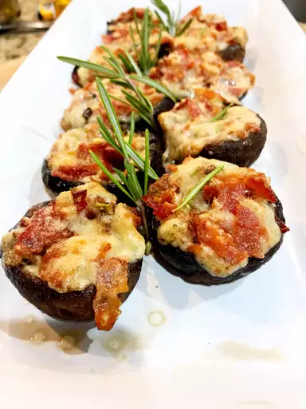

Bacon Rosemary with Mushroom

Delectable stuffed mushrooms are a sure crowd pleaser, especially when stuffed with rosemary, bacon, and cheese!
Ingredients
- 2 tablespoons butter
- 1 onion, chopped
- 1 (8 ounce) package mushrooms, stems removed and chopped and caps reserved
- 4 slices bacon, chopped
- 1 1/4 cups shredded Edam cheese
- 2 sprigs fresh rosemary, chopped
Steps
- Preheat oven to 400 degrees F (200 degrees C).
- Melt butter in a skillet over medium heat and cook onion until soft and translucent, about 5 minutes. Add chopped mushroom stems and cook until soft, 5 to 7 minutes.
- Place bacon in a large skillet and cook over medium-high heat until evenly browned, about 10 minutes. Drain bacon pieces on paper towels and add to mushroom mixture. Stir in Edam cheese and rosemary and mix to combine. Fill mushroom caps with mixture and place on a baking sheet.
- Bake in the preheated oven until filling is lightly browned and cheese is melted, 15 to 20 minutes.